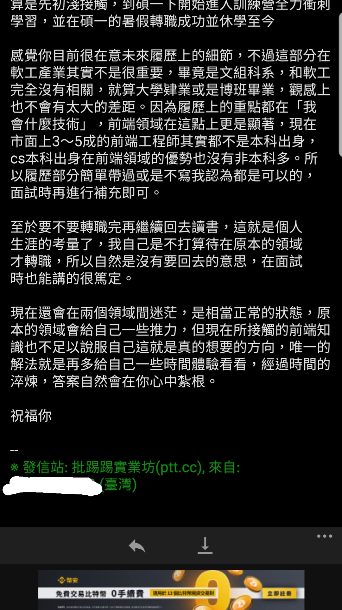

我是林立勛，就讀於台大華語教學所。從小因為喜歡語言所以所讀的領域都跟語言有關。不過，到了這個暑假，我開始思索以後的職涯發展，在問過許多學長姐的答案之後，發現並不是自己想要的。思索過後，覺得自己想要的是一個專業性高且技術可以隨身帶著走的工作，也喜歡工程師相對彈性的工作環境及時間，並覺得透過寫程式可以影響到的人更多，像是能做出讓所有人都更好使用的網頁，還有讓載入的速度更快等等。因此，決定把目標設定為前端工程師，並利用這半年時間轉職。
我在兩年前曾經上過六角學院的HTML及CSS課程，內容為基本HTML的標籤及基本的CSS。並且做了三個靜態的一頁式網頁。以下為專案作品的Codepen連結：
在決定轉職之後，我開始找更多自學資源。像是在YT上「我阿嬤都會」提供基礎教學、在Medium上找到非本科轉職的工程師Hannah Lin分享的技術文章。另外我也會關注工程師的職涯發展及工作環境，像是「在地上滾的工程師 Nic」就分享了許多這方面的資訊。
除此之外，為了更了解非本科系的人都是怎麼轉職前端工程師的，我上網爬了許多文，像是看了網路上的轉職分享文，參考前人的想法、學習方式、轉職歷，。看完文章之後更會主動出擊，因為我知道唯有自己積極，才能找到更多的資源。我在ptt看到第二屆學員寫的心得文之後，因為發現他的經歷跟我很像，我就主動寫信給他詢問相關問題。也是看完他的文章之後，我才知道彭彭老師的軟體工程師扶持計劃。看完他的回覆之後，更讓我確定自己想轉職前端工程師。
我目前為碩士班在學生，課不多且是自己可以應付的內容，其他時間則可以全部投入程式學習。因為課表已經出來了，我也規劃了以周為單位的時間表，不但更具體且方便自己實際執行。目前計劃先用這個時間表來投入第一階段的學習，估計一個星期的練習時間可達60小時以上。等到下學期進入第二、三階段，要開始製作專案時，將會再行調整，騰出更多時間來製作專案。
| 時間/星期 | 星期一 | 星期二 | 星期三 | 星期四 | 星期五 | 星期六 | 星期日 |
| 8:00-9:00 | 寫程式 | 寫程式 | 寫程式 | 寫程式 | 寫程式 | 寫程式 | 寫程式 |
| 9:00-10:00 | 研究所上課 | 研究所上課 | 研究所上課 | ||||
| 10:00-11:00 | |||||||
| 11:00-12:00 | |||||||
| 12:00-13:00 | 午餐 | 午餐 | 午餐 | 午餐 | 午餐 | 午餐 | 午餐 |
| 13:00-14:00 | 寫程式 | 工讀 | 工讀 | 工讀 | 研究所功課 | 研究所功課 | 寫程式 |
| 14:00-15:00 | 研究所功課 | ||||||
| 15:00-16:00 | |||||||
| 16:00-17:00 | 寫程式 | 寫程式 | |||||
| 17:00-18:00 | 寫程式 | 寫程式 | 寫程式 | 寫程式 | |||
| 18:00-19:00 | 晚餐 | 晚餐 | 晚餐 | 晚餐 | 晚餐 | 晚餐 | 晚餐 |
| 19:00-20:00 | 寫程式 | 寫程式 | 寫程式 | 寫程式 | 寫程式 | 寫程式 | 寫程式 |
| 20:00-21:00 | |||||||
| 21:00-22:00 | |||||||
| 22:00-23:00 | |||||||
| 23:00-24:00 | |||||||
| 24:00-1:00 |
想轉職工程師的原因除了工程師的工作型態以及專業度外，還有一個原因是因為想要透過寫程式為社會做出貢獻。因此，我想要去Teach for Taiwan (為臺灣而教) 擔任他們的工程師。TFT的宗旨是要解決教育不平等的現象，專注於解決偏鄉國小師資缺乏的問題。目前TFT的宣傳都是透過網站及社群媒體居多，因此網站是他們很重要的工具。若能在裡面擔任前端工程師，可以為TFT的網站貢獻一份心力，讓更多人知道該組織的理念。
在大二時，擔任一位國二生的英文家教。家長一開始有跟我提醒家教弟弟是特殊生，英文課會被抽離原班加強輔導，且平常學習的反應比較慢。一開始我天真地覺得只是因為講得不夠多遍，多提醒就能學會，因此我就用之前當學生時老師教我的方法教他，講完句型單字就抽考，回家指定要背多少單字。後來發現成效不佳且弟弟上課很不快樂，這時才感受到每個人的學習方式都不同。
我決定先從認識及觀察弟弟開始，我開始會在一開始上課時詢問他的近況，還有學校上英文課的情形，下課時也會跟家長聊一下，我後來發現原來弟弟不喜歡學校的教學方式，因為他的學習速度沒有這麼快，也不喜歡只是一直寫考卷。於是我開始改變我的教學方式，進度放慢並且一個觀念一個觀念慢慢教，確定都會了才往下個觀念前進。除此之外，我還發現弟弟學習的方式很特別，他需要同一個概念用多種教學方式才能懂。我後來教句型時，會先跟他解釋句型的意思，還會用圖片、製作句型卡讓他重組的方式來教學，幫助他找到能順利學習句型的方式。
在這過程中最困難的地方是，我用了自以為對他有用的方式教，當發現沒用時感到很慌張跟苦惱，覺得很沒方向。之後透過主動尋找資源：也就是從觀察及詢問開始，收集完資料就開始分析適合的教法，並藉由不斷嘗試，得到最適合他的教學方式。
在這份申請中，我在「表格」的製作上花了很多時間及心力，首先先看彭彭老師的教學影片，再依據自己的需求找更多資料來調整表格。以下是我想分享的內容：
表格儲存格的寬度。彭彭老師的影片中是直接設定整個表格的寬度，我後來發現表格的整體寬度不好調整，因為這份表格的儲存格數目太多，因此我用Chrome的檢查功能去看預設一個儲存格的寬度，並在CSS中把標籤td的寬度改成兩倍多一點。
彭彭老師課程中示範的表格只有在第一列有塗上顏色，不過因為我的表格適合在第一列跟第一行都塗，因此我不但用了影片中的tr:nth-child(1)，更延伸想到只要把tr改成td，變成td:nth-child(1)，就可以成功使第一行也變顏色。研究出來時還蠻高興的，因為試著去找結果沒找到，最後是再想一次邏輯才想到寫法，果然自己想出來的最有成就感。
我的表格中很多地方可以合併，於是我自己去找合併儲存格的教學，成功把表格內的儲存格合併，視覺上看起來更舒適。也透過這個過程，讓我對於表格的寫法有很深的印象。
謝謝彭彭老師舉辦這個計劃！一開始看到這個計劃時，對於不上課只提供任務目標這件事情有點震撼，不過後來仔細想想，的確應該將目光放遠一點，要想到正式工作時的狀況。之前看到別人的分享文寫說轉職成功開始工作才是挑戰的開始，所以若能盡早培養獨立解決問題的能力，將會對以後的職涯發展更有利。在製作申請網頁時也體會到未來轉職時會面臨到的問題，過程中也更加確定自己不排斥寫程式以及想要培養好自己能獨立解決問題的能力。最後謝謝看履歷的彭彭老師以及助教們！